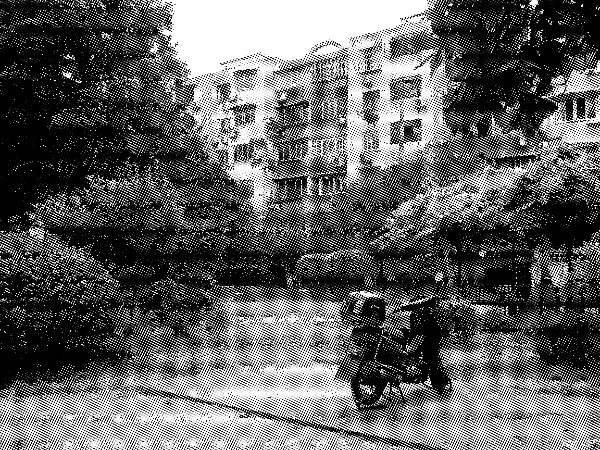

noise:
people in the other room arguing over cooking (hearing the arguing and the pots and pans) reminds me of home, and my parents
collection of memories of music and sound...
here to read more
here to submit your own stories
smell:
outdoor air conditioners in china (I think that’s what the smell is). it’s not very pleasant, but one time I was walking down a street near my high school and I got a whiff of it, and for a second I really felt like I was in china o_o I’d totally forgotten I even remembered that smell, but the only other time I’ve ever smelled it was when I visited china a couple years ago

walking by these buildings is when I’d smell the air conditioner smell whatever it actually was
random - when I went back to shanghai I was surprised at how many trees there were lining the sidewalk
outside of our apartment (we were on the 2nd floor though)
this apartment is where I had most of my memories from childhood
3 things that make me feel nostalgic —
this really nice large ceramic mug an old friend gave me (we had some conflicts lol),
my comforter (the padding inside is one my grandma sewed together),
sunflower seeds (this is the first time I’ve had it here. in the past we only had it at home, usually after dinner)
I miss the oranges at home
we usually had a lot...
ok no oranges but I look hungry here...
my mom used to call me her caterpillar or some other kind of bug back when I was younger cause I had to follow her around everywhere in the grocery store (I mean I was a kid lol. I was trying not to lose my parents). for some reason it seemed to make sense in chinese
OH taylor swift makes me feel nostalgic
cause I listened to her a lot in middle school! same with avril lavigne
I feel younger when I listen to old taylor swift songs LOL
ohh yeah you have to listen to like teardrops on my guitar and you belong with me
hmm maybe.. a couple years ago she came out with something but I think it was a single
also hilary duff man
3 traditions I keep up with here —
make lots of century egg porridge (although here it’s usually late at night rather than in the morning over the weekend)
sleep late I guess
oh whoops, those were traditions I keep here and at home
at home some of the traditions are lighting our little tea light candles? and having the tv on late at night (my parents watch stuff in chinese like dramas or dating shows or talent shows)
at home - reading in bed at night
at home - sewing something for presents
at home - baking cinnamon pecans
at home - driving to my mom’s workplace with my dad to practice driving (I have my license but my dad doesn’t trust me entirely)
my grandma was really crafty
when I was younger she made a lot of knit sweaters with animals on them. I remember one with a giraffe. they were itchy but I liked the designs on them. there might have been another one with hippos or something
she knit shoes too apparently but I never saw them
when she lived with us for a while, she’d make these paper diamond sculptures out of cereal boxes and stuff and then would wrap thread around them carefully in a rainbow
and then she would attach them to more strings and beads and things and make these sort of ornate necklaces
I had one and my cousin had one and everyone had one
I think we used to hang them on the door or keep them in this one particular drawer